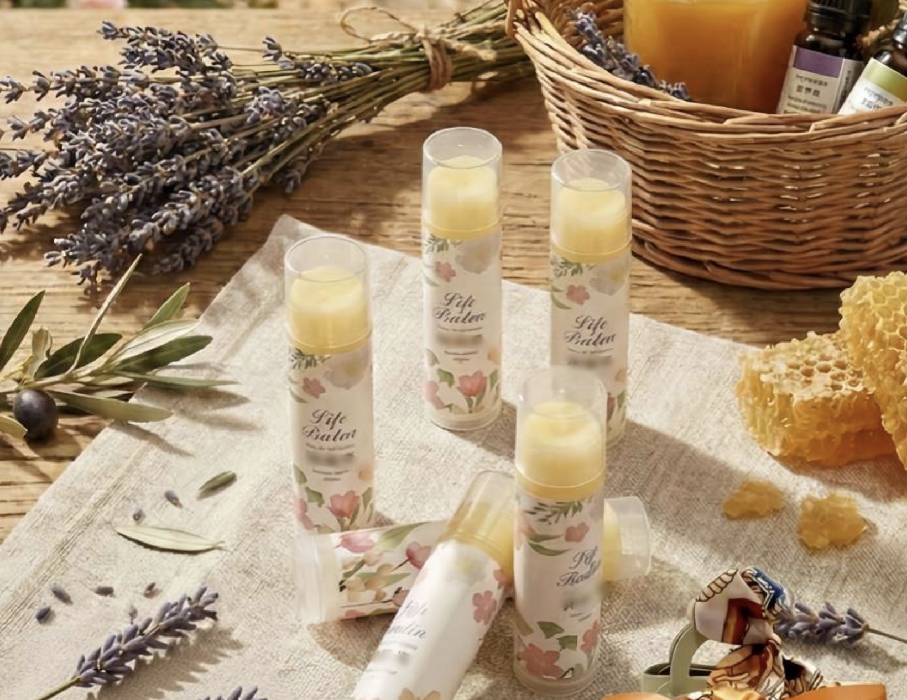

讓雙唇在純淨修護中
遇見最深層的療癒
這款護唇膏追求極致的平衡與純淨。我們嚴選高度滋潤的植物油，揉合天然精油，不僅深層鎖水，更在每次塗抹間，帶來身心的放鬆與修復。
核心油脂：深層滋潤
有機甜杏仁油｜深層軟化
富含維生素E，能溫柔軟化唇部角質，讓乾燥龜裂的雙唇重拾柔嫩。
頂級初榨橄欖油｜強效保護
形成透氣保護膜，有效防止水分流失，是脆弱肌膚的救星。
嚴選小農蜂蠟｜天然鎖水
天然抗菌特性讓滋養成分更持久，維持雙唇長效水潤。
理療級精油：修復饗宴
精油不只帶來香氛，更賦予了修復肌膚與療癒情緒的獨特價值。
精油功效查詢
點擊下方按鈕了解精油特性
點擊上方按鈕，小天使會告訴你精油功效